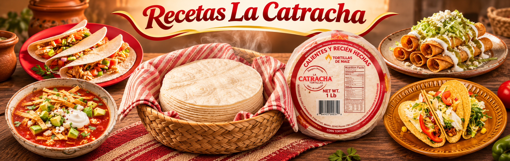
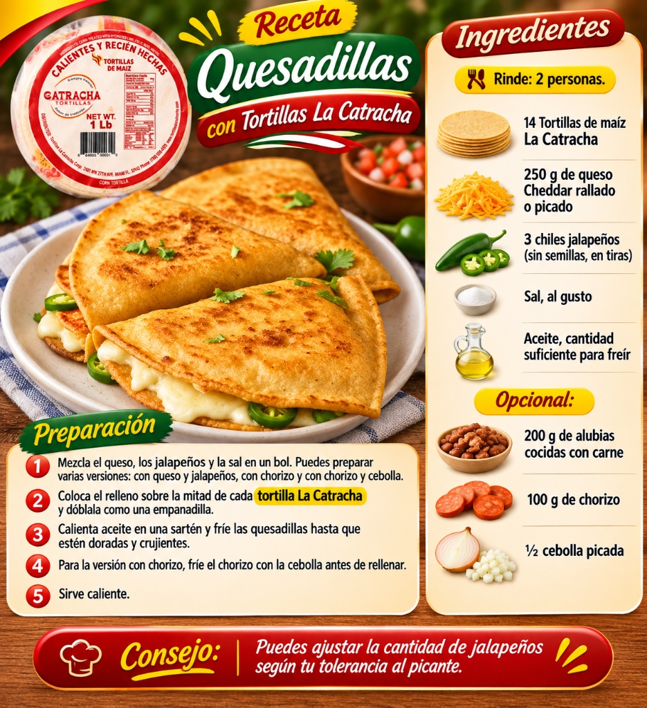
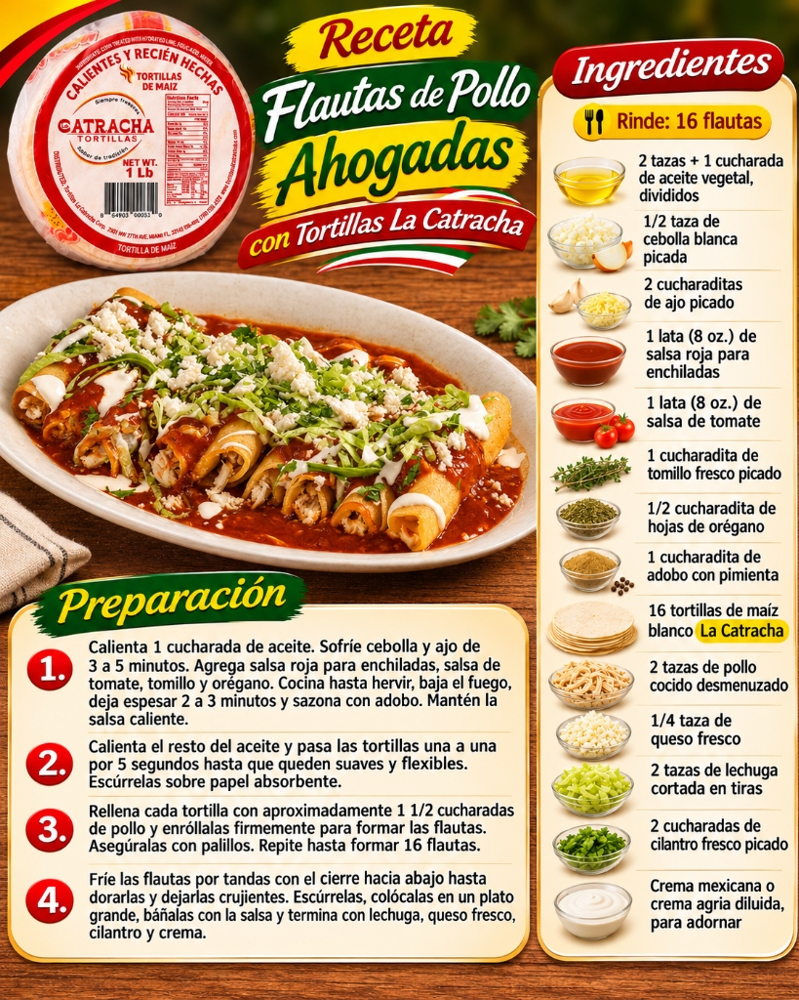
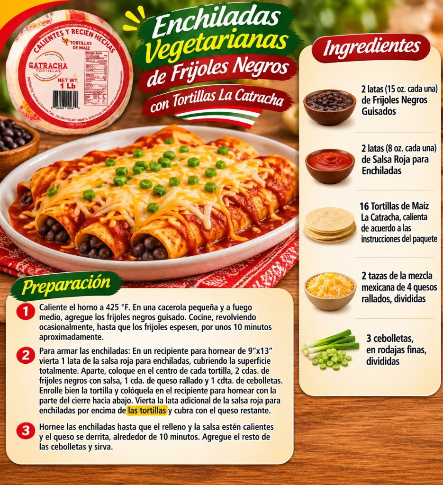
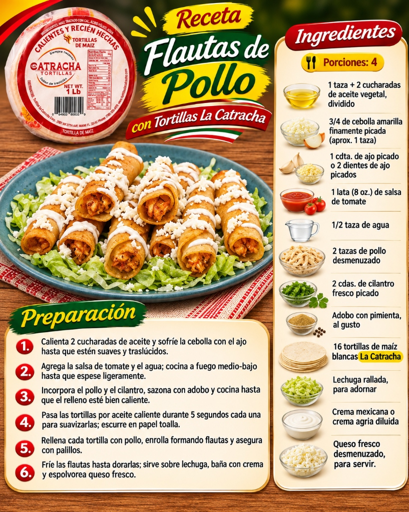
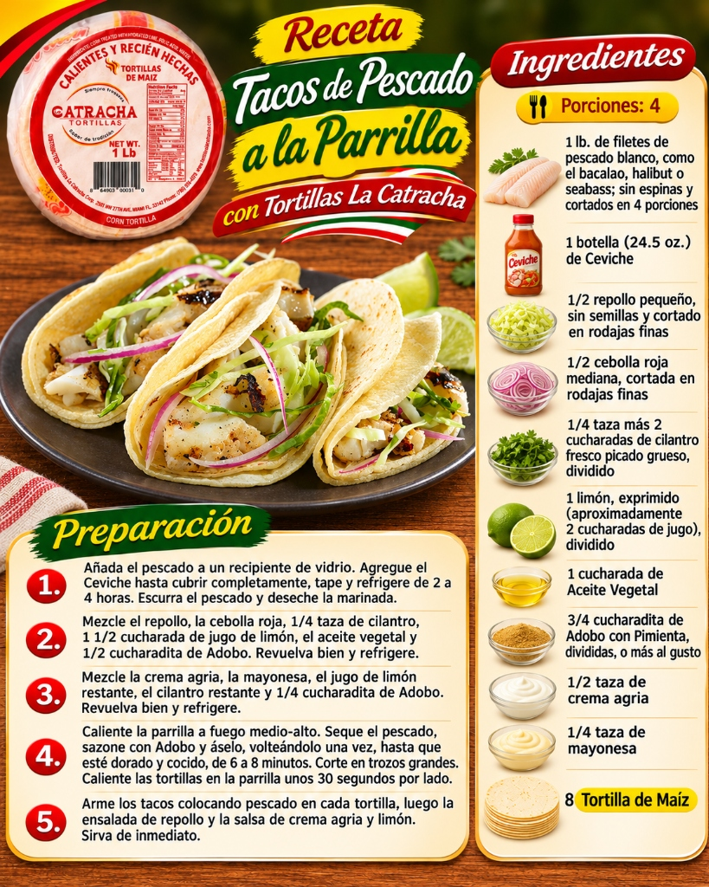
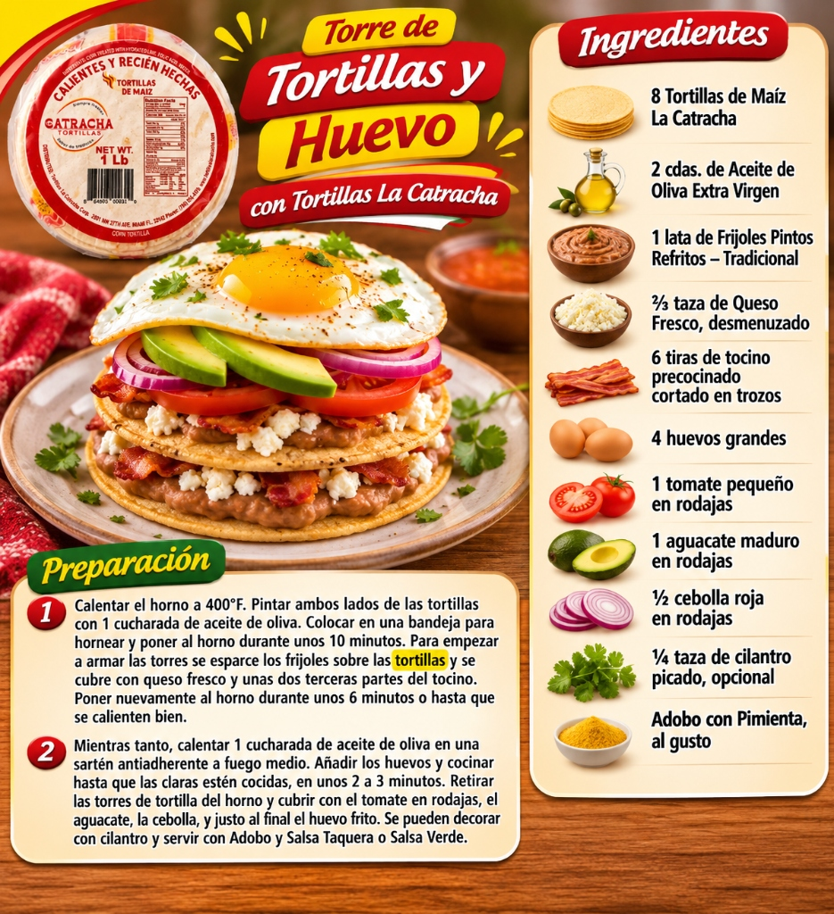
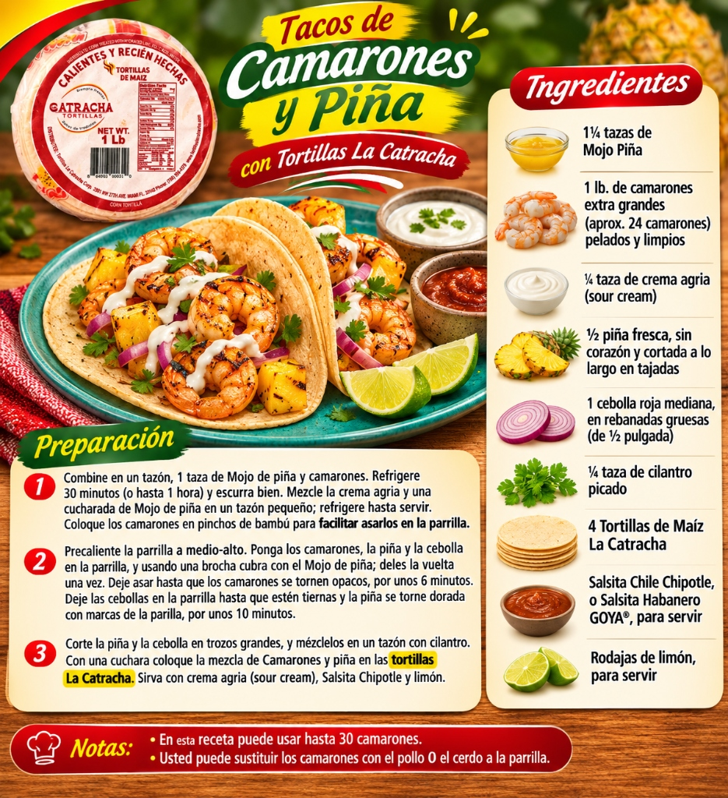
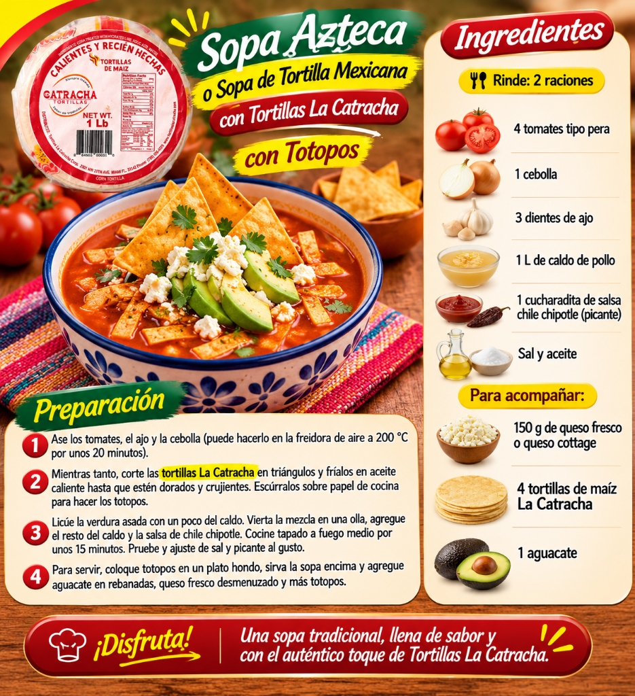

Ingrediente principal: Tortillas La Catracha

En cada uno de estos platillos, nuestras Tortillas de Maíz La Catracha son el ingrediente principal que aporta suavidad, resistencia y sabor auténtico. Pasa el mouse para agrandar o haz clic en cualquier receta para verla completa.

Ampliar recetaDoradas y crujientes por fuera, rellenas de queso Cheddar fundido y chiles jalapeños, con Tortillas de maíz La Catracha como base protagonista.

Ampliar recetaCrujientes flautas bañadas en salsa roja especiada con lechuga, queso y crema, enrolladas con Tortillas de maíz blanco La Catracha.

Ampliar recetaHorneadas con frijoles negros guisados, salsa roja y mezcla de 4 quesos usando Tortillas de maíz La Catracha como elemento central.

Ampliar recetaPollo desmenuzado sazonado envuelto en suaves Tortillas de maíz blancas La Catracha, doradas y servidas con crema y queso fresco.

Ampliar recetaFiletes de pescado blanco marinados sobre Tortillas de maíz La Catracha tibias a la parrilla, con repollo, cebolla roja y limón.

Ampliar recetaCapas crujientes de Tortillas de maíz La Catracha con frijoles refritos, queso fresco, tocino, aguacate y huevo frito encima.

Ampliar recetaCamarones y piña asados en mojo tropical servidos sobre flexibles Tortillas de maíz La Catracha con crema y salsita chipotle.

Ampliar recetaCaldo tradicional de tomate asado y chipotle coronado con crujientes totopos hechos de Tortillas de maíz La Catracha, aguacate y queso fresco.
2501 NW 27TH AVE. MIAMI, FL. 33142
.png)